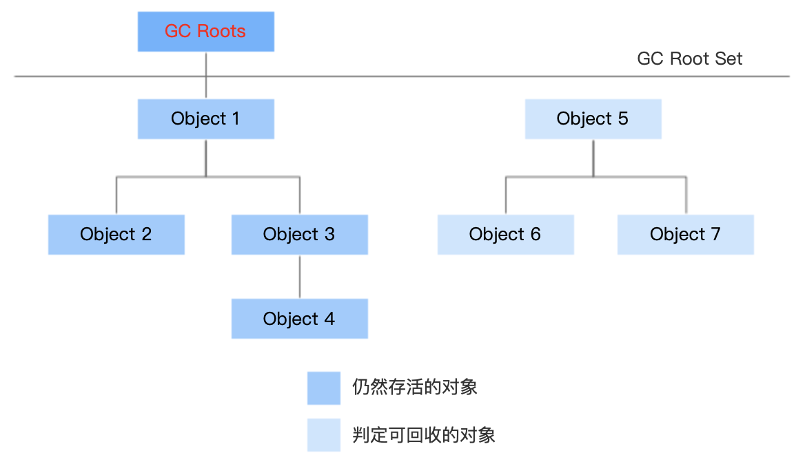
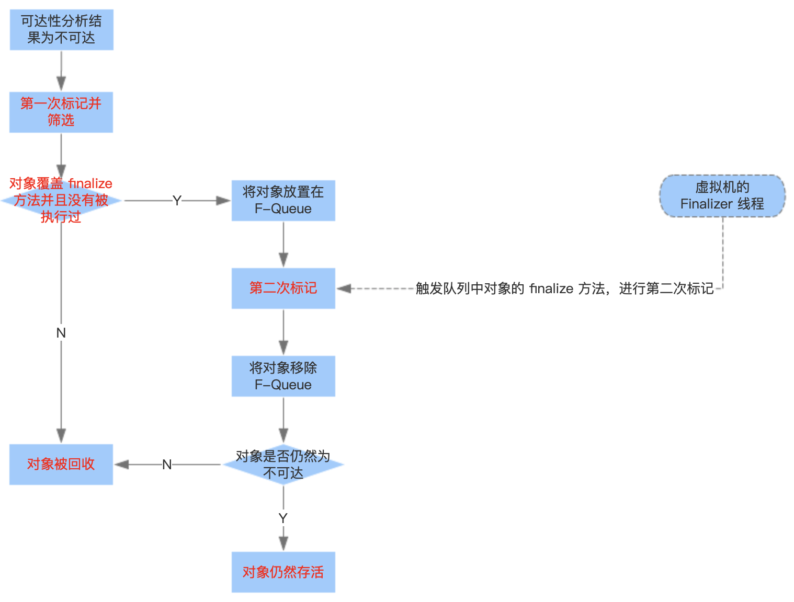
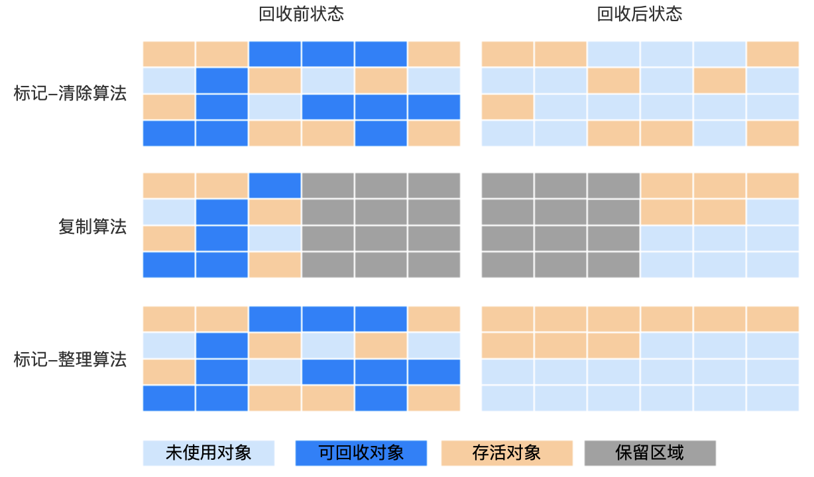
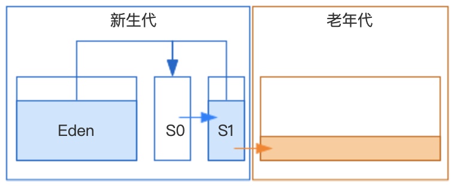
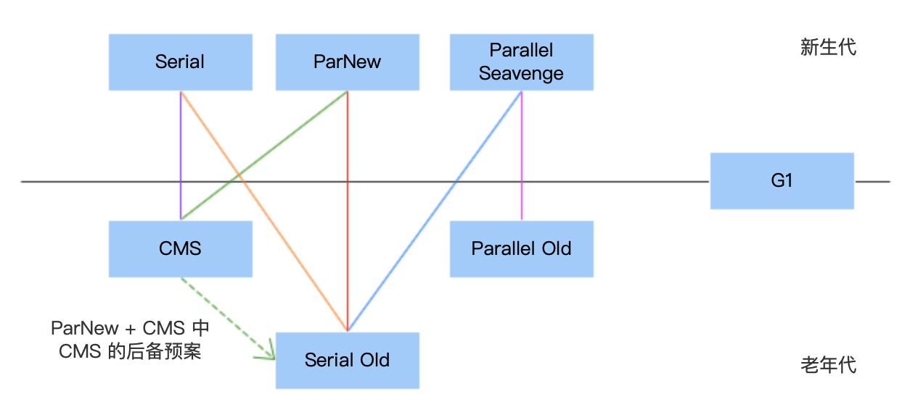
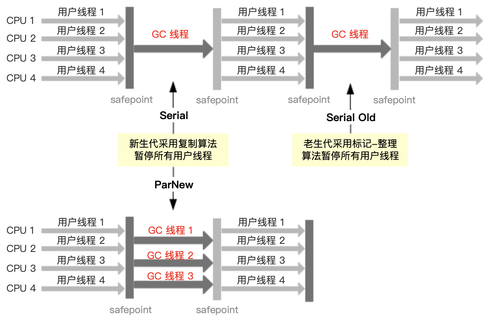
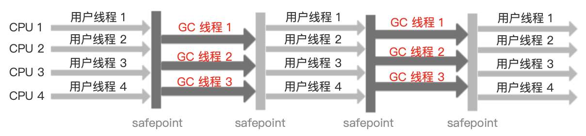

1 对象的存活判断
1.1 存活判断算法
① 引用计数法
给对象添加一个引用计数器，每当有一个地方引用它时，计数器值就加 1，当引用失效时，计数器值就减 1，任何时刻计数器为 0 的对象就是不可能再被使用的。优点：实现简单，判断效率高。缺点：JVM 里面没有选用引用计数算法来管理内存，其中最主要的原因是它很难解决对象之间相互循环引用的问题。
② 可达性分析算法（Hotspot JVM 采用的算法）
通过一系列称之为 GC Roots 的对象作为起点，从这个节点开始向下搜索，搜索所走过的路径称为引用链（Reference Chain）。当一个对象到 GC Roots 没有任何引用链相连时（用图论的话来说，就是从 GC Roots 到这个对象不可达），则证明此对象是不可用的。
在 JVM 中哪些对象可以作为 GC Roots 对象呢？
- 虚拟机栈（栈帧中的本地变量表）中引用的对象。即方法的局部变量。
- 方法区中类静态属性引用的对象。
- 方法区中常量引用的对象。
- 本地方法栈中 JNI（即一般说的 Native 方法）引用的对象。
注意：实例变量不能作为 GC Roots。
1.2 引用类型
在 JDK 1.2 之后，Java 对引用的概念进行了扩充，将引用分为强引用、软引用、弱引用和虚引用 4 种，这 4 种引用强度依次逐渐减弱。
- 强引用：强引用就是指在程序代码之中普遍存在的，类似 Objectobj = new Object; 这类的引用，只要强引用还存在，垃圾收集器永远不会回收掉被引用的对象。
- 软引用：软引用是用来描述一些还有用但并非必需的对象。对于软引用关联着的对象，在系统将要发生内存溢出异常之前，将会把这些对象列进回收范围之中进行第二次回收。如果这次回收还没有足够的内存，才会抛出内存溢出异常。在 JDK1.2 之后，提供了
SoftReference类来实现软引用。正常情况下垃圾回收是不会回收软引用对象的，但是如果你进行垃圾回收之后，发现内存空间还是不够存放新的对象，内存都快溢出了，此时就会把这些软引用对象给回收掉，哪怕他被变量引用了，但是因为他是软引用，所以还是要回收。 - 弱引用：弱引用也是用来描述非必需对象的，但是它的强度比软引用更弱一些，被弱引用关联的对象只能生存到下一次垃圾收集发生之前。当垃圾收集器工作时，无论当前内存是否足够，都会回收掉只被弱引用关联的对象。在 JDK1.2 之后，提供广 WeakReference 类来实现弱引用。弱引用就跟没引用是类似的，如果发生垃圾回收，就会把这个对象回收掉。
- 虚引用：虚引用也称为幽灵引用或者幻影引用，它是最弱的一种引用关系。一个对象是否有虚引用的存在，完全不会对其生存时间构成影响，也无法通过虚引用来取得一个对象实例。为一个对象设置虚引用关联的唯一目的就是能在这个对象被收集器回收时收到一个系统通知。在 JDK1.2 之后，提供了 PhantomReference 类来实现虚引用。
1.3 对象的生死存亡
在可达性分析算法中分析得出对象不可达的时，也并非是“非死不可”的，这时候它们暂时处于“缓刑”阶段，要真正宣告一个对象死亡，至少需要两次标记过程：
- 对象在进行可达性分析后发现没有与 GC Roots 相连接的引用链，会被第一次标记并筛选有必要执行 finalize 方法的对象。如果没有覆盖 finalize 方法，或者 finalize 方法已经被虚拟机调用过，都会被视为没有必要执行。
- 将筛选出的对象存放在 F-Queue 中，稍后由虚拟机自动建立的、低优先级的一个后台线程 Finalizer 去执行对象的 finalize 方法，但不承诺等待运行结束，原因是如果有个对象的 finalize 方法执行缓慢或是发生了死循环，可能导致 F-Queue 队列中的其他对象永久处于等待，甚至导致整个内存回收系崩溃。finalize 方法是对象逃脱死亡命运的最后一次机会，稍后 GC 将对 F-Queue 中的对象进行第二次小规模的标记，如果对象在 finalize 方法中重新与引用链上的任何一个对象建立关联，那么在第二次标记时它将被移除出“即将回收”的集合；如果对象这时候还没有逃脱，那么基本上它就真的被回收了。
执行示意图：
注意：任何一个对象的 finalize 方法都只会被系统自动调用一次。
验证示例代码：
1 | /** |
执行结果：
1 | 执行 finalize 方法 |
不鼓励使用 finalize 方法，因为它不是 C/C++ 中的析构函数，而 Java 刚诞生时为了使 C/C++ 程序员更容易接受它所做出的妥协。它的运行代价高昂，不确定性大，无法保证各个对象调用的顺序。有些教材中描述它适合做关闭外部资源之类的工作，这完全是对这个方法用途的一种自我安慰。finalize 能做的工作，使用 try-finally 或者其他方法都可以做得更好的、更及时。
1.4 方法区的垃圾回收
JVM 中方法区的垃圾收集主要回收两部分内容：废弃常量和无用的类。
判断是否是废弃常量：没有任何对象指向该常量。例如一个字符串 “abc” 已经进入了常量池中，但是当前系统没有一个 String 对象叫做 “abc” 的，那么这个 “abc” 其实已经没有任何一个对象引用了。常量池中的其他类（接口）、方法、字段的符号引用也与此类似。
判断是否是无用的类（三个条件）：① 该类所有实例都已经被回收，也就是 Java 堆中不存在该类的任何实例。② 加载该类的 ClassLoader 已经被回收。③ 该类对应的 java.lang.Class 对象没有在任何地方被引用，无法在任何地方通过反射访问该类的方法。
JVM 可以对满足以上三个条件的无用类进行回收，这里说的仅仅是可以，而不是和对象一样，不使用了就必然会回收。是否对类进行回收 HotSpot 虚拟机提供了 -Xnoclassgc 参数进行控制，还可以使用 -verbos:class 以及 -XX:+TraceClassLoading 和 -XX:+TraceClassUnLoading 查看类加载和卸载信息。在大量使用反射、动态代理、CGLIB 等 ByteCode 框架、动态生成 JSP 以及 OSGi 这类频繁自定义 ClassLoader 的场景都需要虚拟机具备类卸载的功能，以保证永久代不会溢出。
在此我们讨论的范围仅限于 Java 8 版本之前方法区实现为 Hotspot 虚拟机中的永久代，对于 Java 8 版本及之后的版本变更后续补充。
2 垃圾收集算法
主要的算法有三种：① 标记-清除算法，② 复制算法，③ 标记-整理算法，分代收集算法算作是对其三种的组合应用。那么各个算法到底有和优缺点？
2.1 标记-清除算法
分为“标记”和“清除”两个阶段：首先标记出所有需要回收的对象，在标记完成后统一回收所有被标记的对象，注意顺序：标记-清理。
优点：相比较复制算法内存利用率高。
缺点：① 效率低，标记和清除两个过程的效率都不高；② 空间碎片多，导致后续分配较大对象时，无法找到足够的连续内存而不得不提前触发另一次垃圾收集动作。
2.2 复制算法
为了解决效率问题，一种称为“复制”的收集算法出现了，它将可用内存按容量划分为大小相等的两块（内存利用率低），每次只使用其中的一块。当这一块的内存用完了，就将还存活着的对象复制到另外一块上面，然后再把已使用过的内存空间一次清理掉。
优点：内存分配时不用考虑内存碎片问题，只要移动堆顶指针，按顺序分配内存即可，实现简单，运行高效。
缺点：将原有内存缩小为了一半。当对象存活率较高时会进行频繁复制操作，效率变低。
2.3 标记-整理算法（也称标记压缩算法）
标记过程仍然与“标记-清除”算法一样，但后续步骤不是直接对可回收对象进行清理，而是让所有存活的对象都向一端移动，然后直接清理掉端边界以外的内存，注意顺序：标记-移动-清理。
优点：也是因为后面的移动操作，不会存在空间碎片。
缺点：因为多了后面的移动操作，比标记-清除算法效率还要低。
2.4 分代收集算法
当前商业虚拟机的垃圾收集都采用“分代收集”算法，这种算法并没有什么新的思想，只是根据对象存活周期的不同将内存划分为几块。一般是把 Java 堆分为新生代和老年代，这样就可以根据各个年代的特点采用最适当的收集算法。在新生代中，每次垃圾收集时都发现有大批对象死去，只有少量存活，那就选用复制算法，只需要付出少量存活对象的复制成本就可以完成收集。在老年代中因为对象存活率高、没有额外空间对它进行分配担保，就必须使用标记-清除或者标记-整理算法来进行回收。
在 JVM 内存使用模型，大体上就是我们的代码不停的创建对象然后分配在新生代里，但是一般很快那个对象就没人引用了，成了垃圾对象。接着一段时间过后，新生代就满了，此时就会回收掉那些垃圾对象，空出来内存空间，给后续其他的对象来使用。其实绝大多数的对象都是存活周期非常短的对象，可能被创建出来 1 毫秒之后就没人引用了，它就是垃圾对象了。所以可以想象一下，可能一次新生代垃圾回收过后，99% 的对象其实都被垃圾回收了，就 1% 的对象存活了下来，可能就是一些长期存活的对象，或者还没使用完的对象。所以前面理论中的复制算法的缺点：存活对象很少，未能合理分配空间，导致浪费了大量的内存空间。
所以 HotSpot JVM 实际上做法是把新生代内存区域划分为三块，一块 Eden，两块 Survivor，其中 Eden 区占 80% 内存空间，每一块 Survivor 区各占 10% 内存空间。比例为 8:1，由参数 -XX:SurvivorRatio 控制。具体算法执行过程：刚开始对象都是分配在 Eden 区内，如果 Eden 区满了，就会触发垃圾回收，此时就会把 Eden 区中的存活对象都一次性转移到一块空着的 Survivor 区。接着 Eden 区就会被清空，然后再次分配新对象到 Eden 区里，Eden 区和一块 Survivor 区里是有对象的，其中 Survivor 区里放的是上一次 Young GC 后存活的对象。如果下次再次 Eden 区满，那么再次触发 Young GC，就会把 Eden 区和放着上一次 Young GC 后存活对象的 Survivor 区内的存活对象，转移到另外一块 Survivor 区去。接着新对象继续分配在 Eden 区和另外那块开始被使用的 Survivor 区，然后始终保持一块 Survivor 区是空着的，就这样一直循环使用这三块内存区域。
这么做最大的好处，就是只有 10% 的内存空间是被闲置的，90% 的内存都被使用上了，无论是垃圾回收的性能，内存碎片的控制，还是说内存使用的效率，都非常的好。
老年代的标记-整理算法的速度至少比新生代的复制算法的速度慢 10 倍。如果系统频繁出现老年代的 Old GC 垃圾回收，会导致系统性能被严重影响，出现频繁卡顿的情况。
所谓 JVM 优化，就是尽可能让对象都在新生代里分配和回收，尽量别让太多对象频繁进入老年代，避免频繁对老年代进行垃圾回收，同时给系统充足的内存大小，避免新生代频繁的进行垃圾回收。
3 HosSpot 垃圾收集器
垃圾收集算法为内存回收的方法论，接下来要详述的垃圾收集器就是内存回收的具体实现。不同厂商、不同版本的虚拟机所提供的垃圾收集器都不尽相同，并且一般都会提供参数供用户根据自己的应用特点和要求自由组合出各个年代所使用的收集器。这里主要讨论下 HotSpot 虚拟机下的垃圾收集器：
切记：没有十全十美的的收集器，只有最合适的收集器。
JVM 的痛点：Stop the World
在垃圾收集的时候，为了尽可能让垃圾收集器专心致志的干活，不能随便让我们写的 Java 系统继续创建对象，此时 JVM 会进入 Stop the World 状态。也就是说会直接停止我们写的 Java 系统的所有工作线程，让我们写的代码不再运行！专心垃圾收集。
如果是 Young GC，暂停所有的工作线程，导致请求过来到响应返回，可能需要等待几百毫秒。那么当内存分配不合理，导致对象频繁进入老年代，进而产生 Old GC，而 Old GC 是最慢的，有时候可能一次回收要进行几秒钟，甚至几十秒，极端情况几分钟都是有可能的。
所以说，无论是 Young GC 还是 Old GC，都尽量不要让频率过高，也避免持续时间过长，避免影响系统正常运行，这也是使用 JVM 过程中一个最需要优化的地方，也是最大的一个痛点。
不同垃圾收集器 Stop the World 所对 JVM 性能造成的影响不同
对于新生代的 Serial 垃圾收集器就是用一个线程进行垃圾对象收集，然后此时暂停系统工作线程，所以一般我们在服务器程序中很少用这种方式。常用的新生代垃圾收集器是 ParNew ，它针对服务器一般都是多核 CPU 做了优化，他是支持多线程个垃圾回收的，可以大幅度提升回收的性能，缩短回收的时间。CMS 使用一套独特的机制尽可能的在垃圾回收的过程中减少 Stop the World 的时间，避免长时间卡死我们的系统。
接下来分析下各个垃圾收集器的运行机制。
3.1 Serial/ParNew 与 Serial Old
Serial 与 Serial Old 收集器运行示意图：
需要说明的是：
- 新生代的 ParNew 垃圾收集器主打的就是多线程垃圾回收机制，另外一种 Serial 垃圾收集器主打的是单线程垃圾回收，他们俩都是回收新生代的，唯一的区别就是单线程和多线程的区别，垃圾回收算法是完全一样的。
- Serial 与 Serial Old 收集器基本已经不怎么使用。
- 在没有 G1 垃圾收集器之前，通常采用 ParNew + CMS 垃圾收集器。即使现在已经有了 G1，很多线上系统还是用的 ParNew 垃圾收集器。
- ParNew 垃圾收集器默认情况下的线程数量是与 CPU 的核数一样的。一般不要随意修改，但是也可以通过 -XX:ParallelGCThreads 参数调整。
3.2 Parallel Scavenge
Parallel Scavenge 收集器是新生代收集器，使用的复制算法，又是多线程收集器…看上去和 ParNew 都一样，那它有什么特别之处吗？
第一：与其他收集器关注点不同，CMS 等收集器的关注点是尽可能地缩短垃圾收集时用户线程的停顿时间，而 Parallel Scavenge 收集器的目标则是达到一个可控制的吞吐量。此处的 吞吐量 = 运行用户代码时间 /（运行用户代码时间 + 垃圾收集时间）。Parallel Scavenge 收集器提供两个参数用于精确控制吞吐量，分别是控制最大垃圾收集停顿时间的 -XX:MaxGCPauseMillis 参数，以及直接设置吞吐量大小的 -XX:GCTimeRatio 参数。
第二：自适应调节策略，Parallel Scavenge 收集器使用参数 -XX:+UseAdaptiveSizePolicy 可以开启自适应调节策略，所谓自适应调节策略，是指用户无需设置新生代大小、Eden 与 Survivor 区的比例、晋升老年代对象年龄等细节参数，虚拟机会根据当前系统的运行情况收集性能监控信息，动态调整这些参数以提供最合适的停顿时间或者最大的吞吐量。
使用 Parallel Scavenge 收集器：
- 设置基本的内存数据，比如 -Xmx 设置最大堆；
- 设置 MaxGCPauseMillis 参数（更关注最大停顿时间）或 GCTimeRatio 参数（更关注吞吐量）给虚拟机设立一个优化目标；
- 设置 -XX:+UseAdaptiveSizePolicy 参数，开启自适应调节策略。
详细内容参见：《深入理解 Java 虚拟机：JVM 高级特性与最佳实践》（第二版） 3.5.5 Parallel Scavenge 收集器章节内容。
3.3 Parallel Old
在 Parallel Old 之前，新生代的 Parallel Scavenge 收集器一直处于比较尴尬的状态。原因是，如果新生代选择了 Parallel Scavenge 收集器，老年代除了 Serial Old 收集器别无选择。由于老年代 Serial Old 收集器在性能上的拖累，使用 Parallel Scavenge 收集器也未必能在整体应用上获得吞吐量最大化的效果。
直到 Parallel Old 收集器出现后，“吞吐量优先”收集器终于有了名副其实的应用组合。
Parallel Scavenge/Parallel Old 收集器运行示意图：
3.4 CMS【重点】
CMS 采用标记-清除算法，所以会产生大量的内存碎片， 采用的是垃圾收集线程与系统工作线程尽量同时执行的模式来处理。为什么叫尽量呢？因为在初始标记阶段和重新标记阶段是无法并行运行的。
CMS 收集器运行示意图：

① 执行阶段
第一阶段：初始标记（很快）
标记出所有 GC Roots 直接引用对象，初始标记阶段会造成 Stop the World，暂停一切工作线程，但是影响不大，因为速度非常，仅仅是标记 GC Roots 直接引用对象而已。
比如下面的代码，在初始标记阶段，仅仅会通过 replicaManager 这个类的静态变量代表的 GC Roots，去标记出来他直接引用的 ReplicaManager 对象，这就是初始标记的过程。
1 | public class Kafka { |
第二阶段：并发标记（标记最耗时，但是对系统程序影响不大）
这个阶段会让系统线程可以随意创建对象，继续运行，在运行期间可能会创建新的存活对象，也可能会让部分存活对象失去引用，变成垃圾对象。在整这个过程中，垃圾收集线程会尽可能的对已有对象进行 GC Roots 追踪。
何为 GC Roots 追踪？就是看看老年代里的对象被谁引用了？比如代码中 ReplicaFetcher 的全部老年代对象被 ReplicaManager 对象的实例变量引用了，接着会看，ReplicaManager 对象被谁引用了？会发现被 Kafka 类的静态变量引用了。对于老年代对象进行 GC Roots 追踪需要追踪所有对象是否从根源上被 GC Roots 引用，所以这个过程是是最耗时的。
第三阶段：重新标记（很快）
注意，并发标记只是尽可能的对已有对象进行 GC Roots 追踪，所以第二阶段的结束之后，绝对会有很多存活对象和垃圾对象。因此，进入第三阶段重新标记垃圾对象。
重新标记也会造成 Stop the World，暂停一切工作线程，重新标记速度很快，其实就是对第二阶段中被系统程序变动过的少数对象进行标记，所以速度很快。
第三阶段结束，系统重新恢复运行，进入第四阶段。
第四阶段：并发清除（清除很耗时，但是对系统程序影响不大）
该阶段为了清除第三阶段的垃圾对象，与系统程序并发运行。因为要对对象进行清除操作，所以很耗时。
② 性能分析
可以看到耗时的第二、四阶段，系统程序都是并发运行的，并且 Stop the World 的第一、三阶段只是进行简单的标记，速度很快，所以对性能影响不大。
③ 三大问题
问题 1：CPU 资源紧张
在 CMS 垃圾收集器与系统程序并发阶段，CMS 垃圾收集器虽然不会导致用户线程停顿，但是会因为占用了一部分线程（或者说 CPU 资源）而导致应用程序变慢，总吞吐量会降低。
CMS 默认启动的回收线程数是（CPU 数量+3）/4，也就是当 CPU 在 4 个以上时，并发回收时垃圾收集线程不少于 25% 的 CPU 资源，并且随着 CPU 数量的增加而下降。但是当 CPU 不足 4 个（譬如 2 个）时，CMS 对用户程序的影响就可能变得很大，如果本来CPU 负载就比较大，还分出一半的运算能力去执行收集器线程，就可能导致用户程序的执行速度忽然降低了 50%，其实也让人无法接受。
问题 2：Concurrent Mode Failure 问题
在并发清除阶段，系统一直在运行，可能会随着系统运行使得一些对象进入老年代，同时还变成垃圾对象，这种垃圾对象被称为“浮动对象”。由于 CMS 在这个阶段只不过是回收之前标记好的垃圾对象，所以对这种“浮动对象”是不会回收的，只能等到下次 GC 才回收它们。所以为了保证 CMS 在执行垃圾回收期间，还有一定的空间使得一些对象可以进入老年代，一般会预留一些空间。
CMS 垃圾回收的触发时机，其中有一个就是当老年代内存占用达到一定比例了，就自动执行 GC。 -XX:CMSInitiatingOccupancyFaction 参数可以用来设置老年代占用多少比例的时候触发 CMS 垃圾回收，JDK 1.6 里面默认的值是 92%。 也就是说，老年代占用了 92% 空间了，就自动进行 CMS 垃圾回收，预留 8% 的空间给并发回收期间，系统程序把一些新对象放入老年代中。
那么如果 CMS 垃圾回收期间，系统程序要放入老年代的对象大于了可用内存空间，此时会如何？ 这个时候，会发生 Concurrent Mode Failure，就是说并发垃圾回收失败了，我一边回收，你一边把对象放入老年代，内存都不够了。
此时就会自动用 Serial Old 垃圾回收器替代 CMS，就是直接强行把系统程序 Stop the World，重新进行长时间的 GC Roots 追踪，标记出来全部垃圾对象，不允许新的对象产生。 然后一次性把垃圾对象都回收掉，完事儿了再恢复系统线程。所以在生产实践中，这个自动触发 CMS 垃圾回收的比例需要合理优化一下，避免 Concurrent Mode Failure 问题。
问题 3：内存碎片问题
CMS 采用标记-清除算法，这就意味着收集结束时会有大量空间碎片产生。空间碎片过多时，将会给大对象分配带来很大麻烦，往往会出现老年代还有很大空间剩余，但是无法找到足够大的连续空间来分配当前对象，不得不提前触发一次 Old GC。
为了解决这个问题，CMS 收集器提供了一个 -XX：+UseCMSCompactAtFullCollection 开关参数（默认就是开启的），用于在 Old GC 之后要再次进行 Stop the World，停止工作线程，开启内存碎片的合并整理，由此可见内存整理的过程是无法并发的，空间碎片问题没有了，但停顿时间不得不变长。
虚拟机设计者还提供了另外一个参数 -XX：CMSFullGCsBeforeCompaction，这个参数是用于设置执行多少次 Old GC 后再执行一次内存整理的工作，默认值为 0，表示每次 Old GC 后都进行一次内存整理。
3.5 G1【TODO】
4 内存分配策略
经典的 JVM 内存分配流程图：